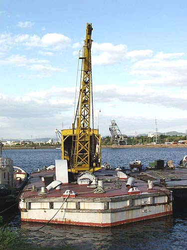

クレーン船「大金剛丸」
福岡県大牟田市新港町
長さ30ｍ、幅約10メートル、総トン数231トン。三池港閘門手前の内港桟橋に係留してある。
明治38年に大阪から中古で購入された。クレーン吊り上げ能力は最大15トン。英国製。クレーンは石炭蒸気ボイラーで 駆動。ボイラーが温まり作業が出来るようになるまで2、3時間を要する。自走はしないため、現場までタグボートでえい航。
後方には「三池式快速石炭船積機3号機（通称 ダンクロ・ローダー）」が見える。

（2003年9月22日撮影）
BACK
NEXT